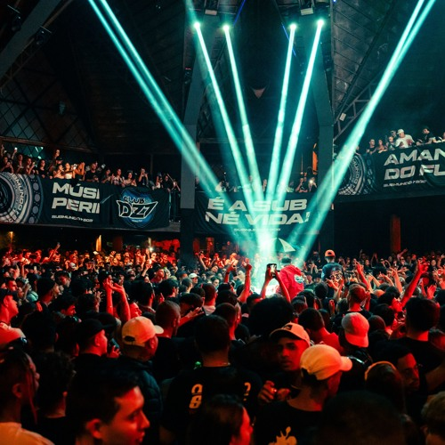

Evento itinerante sem endereço fixo. Estrutura varia conforme ocupação. Galpões, estacionamentos abandonados, casas de show descaracterizadas. Pé direito alto sempre que possível. Grave dominanteFrequência 808 reverberando no concreto.
Entrada sem sinalização explícita. Divulgação fragmentada. Local revelado poucas horas antes. Fluxo guiado por redes e por quem já sabe.

Coletivo originado no interior de São Paulo. Expansão rápida entre 2022 e 2025. Ocupação de espaços formais e informais, muitas vezes ressignificados pela estética do baile.
Sistema de som é o elemento central. Paredões distribuídos em 360°. DJ posicionado ao nível do público ou em estrutura baixa. Iluminação reduzida. Predominância de luz estroboscópica e LED em tons frios.
Capacidade variável. De 300 a mais de 1000 corpos, dependendo da estrutura. Densidade alta nas áreas próximas ao grave.
Público heterogêneo, com predominância jovem. Forte presença de códigos visuais: óculos escuros à noite, peças oversized, estética periférica e eletrônica misturadas.
Chegada após 00:00 recomendada. Pico entre 02:00 e 04:00.
Registro de imagem desencorajado. Em algumas edições, proibido. Segurança atua de forma direta.
Consumo externo tolerado dependendo da edição. Interação com desconhecidos faz parte da dinâmica. Reconhecimento se dá mais por comportamento do que por identificação formal.